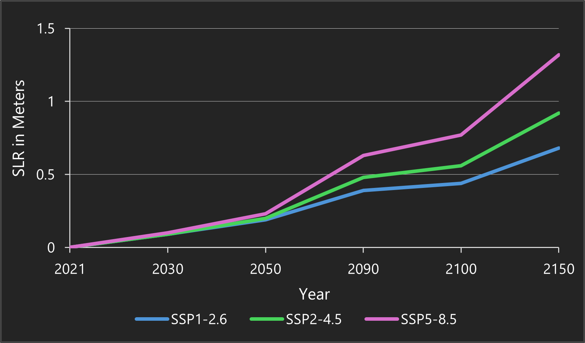

This map shows how future sea-level rise threatens cultural heritage in the UK and Ireland. By combining climate projections with national heritage registers, we identify which archaeological sites are at risk of being lost to the ocean under different climate scenarios.
Theoretical Basis: Relative Sea Level (RSL)
This project visualizes Relative Sea Level (RSL) rather than global averages.
RSL accounts for local vertical land motion. In the UK and Ireland, the land in the north is rising (recovering from the last Ice Age), while the south is sinking.
Note: The Shetland Islands are excluded to focus on the contiguous landmasses of Great Britain and Ireland.
Scenario Definitions (IPCC AR6)
The Shared Socioeconomic Pathways (SSPs) represent different global futures, ranging from strong climate action to continued reliance on fossil fuels.
SSP1-2.6 (Paris Agreement): Limits warming to 2.0°C relative to 1850-1900. Assumes net zero emissions in the second half of the century.
SSP2-4.5 (Middle of the Road): Current trends continue. Best-estimate warming of ~2.7°C by 2100.
SSP5-8.5 (Fossil-Fueled): A worst-case, high-emission scenario with no additional climate policy. Estimated warming of >4.4°C by 2100.
The graph below illustrates the projected Global Mean Sea Level Rise (in meters) resulting from these three scenarios:

Fig 1: Projected Global Mean Sea Level Rise (IPCC AR6) in meters.
Modelling Workflow: Projected Flood Zones
1. DEM Preparation:
Source: Copernicus GLO-30 (DGED). We used 32-bit floating-point precision to capture decimal-level water rises.
Processing: 89 tiles were mosaicked and reprojected to Europe Albers Equal Area Conic for accurate area calculation.
Resampling: Pixels were resampled to squares to ensure accurate distance interpolation.
2. Inundation Analysis (Modified Bathtub Model):
Scope: The analysis was conducted for 9 combinations (3 scenarios: 'SSP1-2.6', 'SSP2-4.5', 'SSP5-8.5' across 3 timeframes: '2050', '2100', '2150').
Water Surface: We used IDW (Inverse Distance Weighted) Interpolation on NASA/IPCC projection points to create a sloping water surface that respects regional gravity.
Hydrological Connectivity: We applied a Region Group algorithm to remove isolated inland "puddles" (e.g., quarries). Only land physically connected to the ocean is mapped as flooded.
3. Web Optimization:
Zones were simplified using the Douglas-Peucker algorithm (100m tolerance, 50,000 m² min area) to improve browser performance.
Modelling Workflow: Heritage Data
1. Data Harmonization:
We aggregated data from five separate national agencies (Historic England, HES, Cadw, NMS, and DfC).
Since naming conventions vary by country, we mapped local fields into a single unified schema.
2. The Risk Matrix:
Instead of creating separate map layers for every year, we calculated a risk matrix. Every site was spatially intersected with every flood scenario.
We pre-calculated a binary status (Safe vs. Flooded) for every site. This allows instant filtering without heavy browser processing.
Limitations
This model ignores physical defenses. We assume dykes and sea walls do not exist or have failed.
Additionally, projections use a Mean High Water (MHW) baseline. Dynamic factors like storm surges and wave run-up are not included.